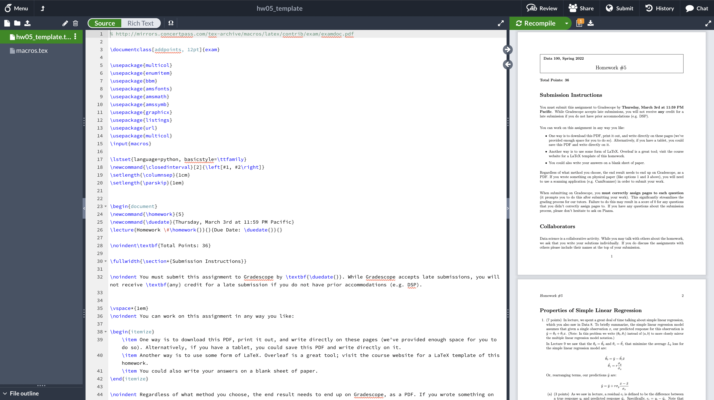

Quick Guide to LaTeX
LaTeX is a typesetting system that creates beautiful scientific documents. You can still submit handwritten homeworks, but we recommend using LaTeX.
Here are some resources on LaTeX to help you get started. There are many excellent tutorials on LaTeX online as well, but we've compiled some of our own so you can see how mathmatical notation works.
LaTeX cheat sheets
Here is an excellent LaTeX cheat sheet that you can reference.
Adding Homework Templates to Overleaf
- Download the homework template file (with extension ending in .zip) from the course website. You do not need to open/extract these files.
- On the Overleaf website (register with your berkeley.edu account), go to "New Project" -> "Upload Project".

- Navigate to the correct .zip file and confirm. The zip file will upload.

- Overleaf will automatically extract this zip and create a new Overleaf project.
